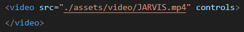
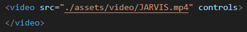

SRC
Define o caminho para o arquivo de vídeo.
CONTROLS
Adiciona controles de reprodução ao vídeo, como play, pause, volume, e barra de progresso.
Define o caminho para o arquivo de vídeo.
Adiciona controles de reprodução ao vídeo, como play, pause, volume, e barra de progresso.
